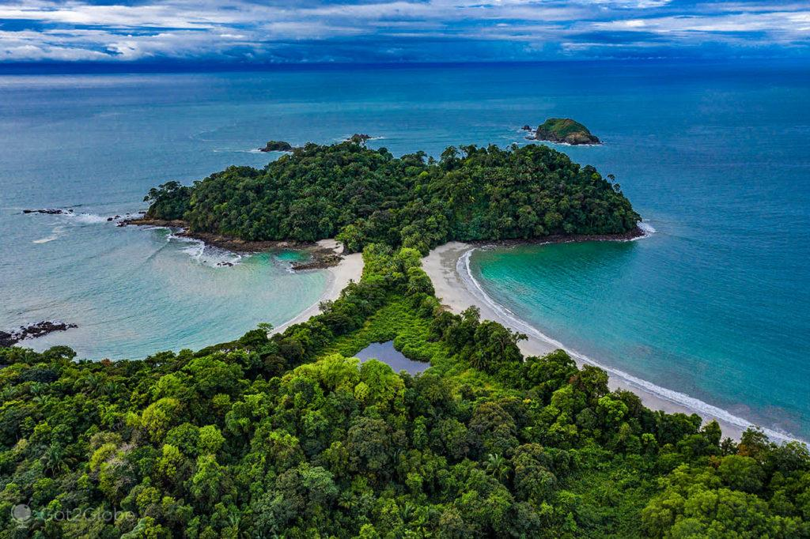
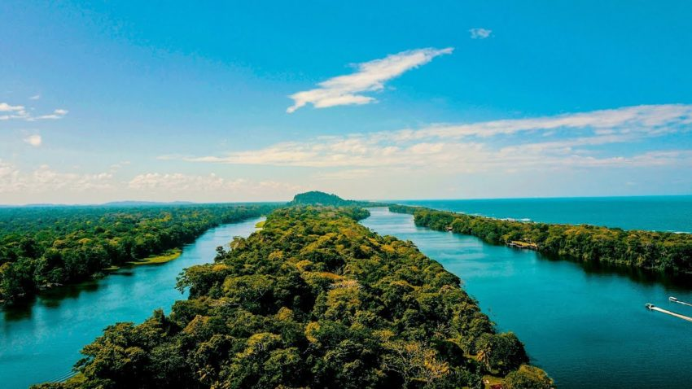

El Parque Nacional Marino Ballena en Costa Rica es un tesoro costero famoso por su playa en forma de cola de ballena durante la marea baja.
Es un destino destacado para el buceo, el esnórquel y el avistamiento de ballenas jorobadas durante su migración. El parque también ofrece
senderos para explorar la selva tropical y observar aves y monos. Además de su belleza natural, el parque promueve la conservación y la educación ambiental,
brindando una experiencia única que combina playas impresionantes y vida marina diversa.
Da click en la imagen para acceder al mapa de lugar,o si deseas conocer más sobre este bello lugar en el siguiente enlace:Parque Nacional Marino Ballena
El Parque Nacional Volcán Arenal en Costa Rica es un destino natural icónico conocido por su majestuoso volcán activo, que alguna vez fue uno de los volcanes
más activos del mundo. Rodeado de exuberantes selvas y lagos escénicos, el parque ofrece senderos para explorar su entorno único y diverso, así como aguas termales
relajantes en las cercanías. Los visitantes pueden disfrutar de actividades como caminatas, observación de aves y aventuras de tirolesa, todo en el impresionante telón de fondo del imponente Volcán Arenal.
Aunque su actividad volcánica ha disminuido, el parque sigue siendo una joya natural que atrae a los amantes de la naturaleza y los entusiastas del ecoturismo.
Si deseas conocer la ubicación de este majestuoso volcán da click en la imagen.
Para conocer más del Parque Nacional Volcan Arenal, da click en el siguiente link: Parque Nacional Volcan Arenal

El Parque Nacional Tortuguero en Costa Rica es una joya de biodiversidad ubicada en la costa caribeña. Conocido como el "Amazonas de Costa Rica",
este parque alberga una rica diversidad de vida silvestre en sus canales, lagunas y selvas tropicales. Es famoso por ser un importante sitio de anidación de tortugas marinas,
como la tortuga verde y la baula. Los visitantes pueden explorar los canales en bote para observar caimanes, monos, aves exóticas y otros animales. La conservación de este frágil ecosistema es fundamental,
y el parque ofrece oportunidades educativas para comprender su importancia. La experiencia en Tortuguero ofrece un encuentro íntimo con la naturaleza y la oportunidad de ser testigo del ciclo de vida de las
tortugas en un entorno verdaderamente único.
Para ver el mapan del sitio puedes dar click en la imagen.
Si deseas conocer más sobre este increíble lugar, dirgite al siguiente link:Parque Nacional Tortugero